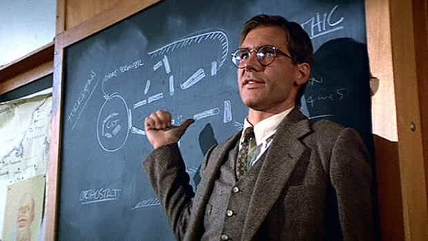

< < < Back
How Our Feminized School System Is Crippling Young Boys – Return Of Kings
When I was around the age of 16, I had somewhat of a rebellious streak—perhaps it was my raging testosterone levels, or perhaps it was my righteous dissatisfaction with our absurd school system. Regardless, I recall an incident that happened between a teacher and I during my Junior year in high school.
I walked into my English class, on the very first day of school—the teacher was a tall man, a couple of inches over six foot, who must have weighed around 230. He was dressed in a pair of khakis, a button down dress shirt, and a tie… and for some reason, I thought it’d be a good idea to mess with him. I can’t remember what I said or did, but I vividly recall what happened afterwards.
He immediately pushed me up against the wall, and physically confronted me: “Listen, Bub—if you think you’re going to start trouble in my class, you’ve got another thing coming. Now you’re going to sit down in that chair, and show me the respect that I deserve. Do you understand?”
I was completely stunned—up to that point, I hadn’t even imagined that one of my teachers could do such a thing. I was used to a decade of female schoolteachers, who may have been able to control me when I was seven, but who could barely do anything to manage a class of rowdy high school boys. This man, for having the balls to confront me on my bullshit, had my respect. I sat down and did as I was told, and from then on it was smooth sailing.
I went on to have one of the best English classes that I’ve ever had in my entire life. I ended up getting a 99% in the class, and was his star pupil—I recall learning of the nature-loving philosophy of Thoreau, reading the cryptic, darkly poetic writings of Poe, and delving the depths of the human experience with Shakespeare’s Hamlet and King Lear. As much as I would’ve hated to admit it at the time, being physically confronted is what I needed. I needed an actual alpha male, for lack of a better term, to put my rebellious 16 year old dumbass in his place—and he did.
What’s The Lesson Here?

The lesson is that boys have a psychological need to be taught by men, plain and simple—and who can blame us? We need male role models, especially during our most formative years, and unfortunately, the epidemic of female teachers isn’t cutting it.
I want to make it very clear that I’m not ragging on female teachers here, because I’m not. In fact, the reason that there’s so many women in the profession of teaching, is because it’s a more social job, which women typically favor. Women enjoy working with children, too, which is why around 90% of elementary school teachers are female.
That being said, though, young boys desperately crave to be accepted into the “world of men,” as Robert Bly, founder of the men’s mythopoetic movement so passionately conveyed. When boys don’t have a proper male role model, they get stuck in a sort of “psychological boyhood,” for their entire lives. This is because becoming a man isn’t something that just happens naturally, it’s something that must be taught—every single society in the past knew this, and yet for some foolish reason, we’ve completely forgotten this.
Is it any wonder that so many men nowadays are completely lost, in a sea of existential angst? Is it any wonder that the vast majority of men who I coach are terrified of talking to women, and can’t seem to get over their severe approach anxiety? Is it any wonder that such a large number of men in our country, completely lack boundaries and a sense of purpose?
Of course not! How can we expect our younger generation of boys to become men, if we don’t give them the proper guidance? We can’t! It’s that simple. If we want to see a change in our country for the better, we need to start advocating for a change in the schooling system. I believe that high school teachers should be at least 50% male, so that teenage boys can have some semblance of a male role model to sculpt themselves after.
Lack Of Masculinity In Schools

Where are the toy swords and shields? The room for rough play?
A proper schooling system should have a balance of the masculine and feminine energies. With too much masculine energy, nobody is free to express their individuality or creativity; yet with too much feminine energy, order and logic are thrown to the wind. An appropriate balance of creativity and nurturing with order and confrontation is necessary to rear a child properly, and unfortunately, our schools are currently experiencing far too little masculine energy.
The scenario which I mentioned before, where a teacher physically confronted me, would now be considered child abuse. That man, had the SJW’s gotten their way, would have lost his job and been thrown in jail for child abuse. Admittedly, I’m sure these SJW’s think they’re doing some sort of good, but really, they’re not. Sometimes young boys NEED physical confrontation to learn where they stand in the pack—this is basic evolutionary biology.
Boys need rough play. They need recess and they need male role models. Yes, they need some nurturing, too—this is where the women come in. But too much nurturing is what has created the massive societal problems we’re seeing nowadays, because it leads to:
- An entitlement complex, where you expect someone else to always take care of you
- A lack of agency, because you’re used to a teacher resolving all of your conflicts
- An unrealistic view of the world, because of “safe space” schools
- …and more
Boys need to be allowed to fight one another—studies have shown that rough play is actually beneficial to a child’s development in many ways, and paradoxically, it actually makes them less violent, because they’re able to recognize the difference between play fighting and real fighting. Boys should be encouraged to follow a powerlifting routine starting around age 14, should be given an hour and a half of recess every single day, and most importantly should have an ample amount of male teachers to serve as role models.
Simply instituting these three policies would eliminate 85% of the problems we’re currently seeing with our political system. With healthy male role models, there would be far less crime, and boys would grow into well-integrated members of society, rather than welfare-leeching degenerates, or cucks ready to sell their country out to the false song of globalism. Frequent exercise would lower obesity rates, which would improve the economy and lessen the cost of our healthcare burden, while simultaneously enhancing brain-development, thus increasing our average IQ level.
The Bilderberg Group Knows This

So with such an obvious solution to so many problems with our schooling system, why is it that they still persist? I’ll tell you why—it’s because the elite KNOW that changing our school system would lead to a nation-wide revolution, and a loss of power on their part. So, like a den of vipers, they’ve been hiding in the shadows, pulling the strings to influence public policy and school curricula, in an attempt to deliberately feminize our boys and brainwash our youth.
Is it any wonder that “tolerance” has been spreading all throughout our public schools? Not actual tolerance, but rather a complete surrendering of logic and reason, while simultaneously bending over backwards to cater to mental illnesses and foreign interests? I recall walking to my local public school to vote (for Donald Trump, of course) and seeing a “multi-cultural” wall, where children were encouraged to view all ways of life as being “equal.”
Oh, right, of course! The sexist culture of radical Islam is clearly just as good as traditional Judeo-Christian cultures, right? We should value foreign immigrants over our own US citizens, right? We should give illegal immigrants the right to vote, because we’re all just “equal,” right? Hell no—some cultures are simply better than others, and we need to pass down our own culture to our youth. When a generation neglects to pass down its culture, it is only a matter of time before it dies off.
Why is it that a young Christian man can’t even state his opinion about how transsexualism is a mental disorder (which it is, so that’s not really an opinion), without being sent to the “Title IX” office for discipline? Title IX, in case you men didn’t know, has been the elite’s main attack against masculinity for the last 40 years—they sold it under the guide of “equality,” like they always do, but it’s ended up completely destroying our youth. Here are some things that have happened under Title IX:
- Dozens of male sports teams have been forced to stop
- Mandatory anti-male, “talking to girls is sexual harassment” type training
- Gender neutral language is being pushed
- Unfair sexual assault cases, where ZERO evidence is needed to expel men
- …and more
What started off as a seemingly noble crusade for justice, has been shown to be an absolute NIGHTMARE for our school systems. I believe that, if we want to see a lasting change in our schools, and want to make America great again, we must all do our best to pressure congressmen and President Trump to end this bullshit, bureaucratic, SJW policy.
The Solution
He doesn’t look too happy.
All in all, schools are a battleground for our youth’s future—and we’ve been failing miserably for the last two generations. It’s time that we start taking our schools back, and there’s many different ways to do this. One of the most effective ways is to simply withdraw altogether—home school your children rather than sending them to feminized indoctrination camps.
There are plenty of resources nowadays for parents looking to home school healthy young boys, and what’s even better is that you’ll be able to spend time with your son. Too many fathers neglect spending time with their sons, not realizing that an investment of time is worth far more than any financial investment that you could make in him.
Furthermore, with the Donald in office, completely revamping our school system doesn’t seem like it’s too far out of the realm of possibilities. If you’d like, you can contact your local politicians and pressure them into repealing Title IX, or you can just share this article. Either way, despite the many problems that our school system faces, many men are starting to wake up from the Matrix and fight back. And this, my friends, gives me hope.
Read More: Swedish Boys Demand Apology For Not Being Able To Wear Dresses In School Photo